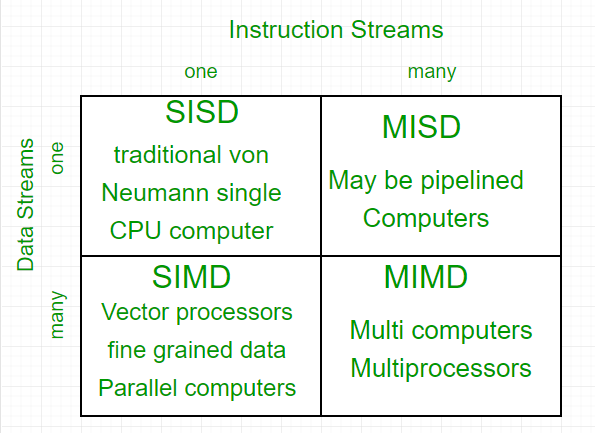
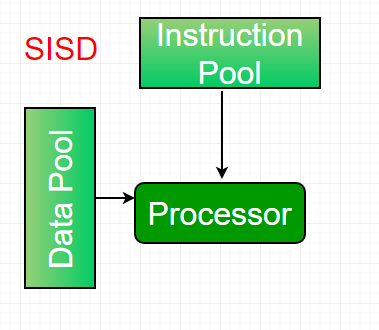
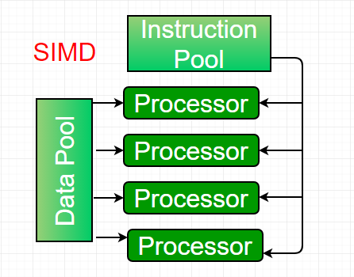
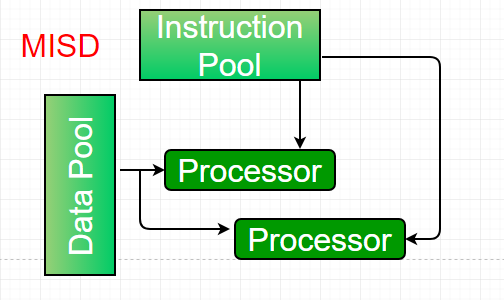
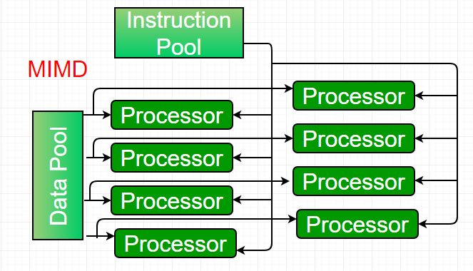

Parallel computing is a computing where the jobs are broken into discrete parts that can be executed concurrently. Each part is further broken down to a series of instructions. Instructions from each part execute simultaneously on different CPUs. Parallel systems deal with the simultaneous use of multiple computer resources that can include a single computer with multiple processors, a number of computers connected by a network to form a parallel processing cluster or a combination of both.
Parallel systems are more difficult to program than computers with a single processor because the architecture of parallel computers varies accordingly and the processes of multiple CPUs must be coordinated and synchronized.
The crux of parallel processing are CPUs. Based on the number of instruction and data streams that can be processed simultaneously, computing systems are classified into four major categories:

Flynn’s classification –
- Single-instruction, single-data (SISD) systems –
An SISD computing system is a uniprocessor machine which is capable of executing a single instruction, operating on a single data stream. In SISD, machine instructions are processed in a sequential manner and computers adopting this model are popularly called sequential computers. Most conventional computers have SISD architecture. All the instructions and data to be processed have to be stored in primary memory.

The speed of the processing element in the SISD model is limited(dependent) by the rate at which the computer can transfer information internally. Dominant representative SISD systems are IBM PC, workstations.
- Single-instruction, multiple-data (SIMD) systems –
An SIMD system is a multiprocessor machine capable of executing the same instruction on all the CPUs but operating on different data streams. Machines based on an SIMD model are well suited to scientific computing since they involve lots of vector and matrix operations. So that the information can be passed to all the processing elements (PEs) organized data elements of vectors can be divided into multiple sets(N-sets for N PE systems) and each PE can process one data set.
Dominant representative SIMD systems is Cray’s vector processing machine.
- Multiple-instruction, single-data (MISD) systems –
An MISD computing system is a multiprocessor machine capable of executing different instructions on different PEs but all of them operating on the same dataset .
Example Z = sin(x)+cos(x)+tan(x)
The system performs different operations on the same data set. Machines built using the MISD model are not useful in most of the application, a few machines are built, but none of them are available commercially. - Multiple-instruction, multiple-data (MIMD) systems –
An MIMD system is a multiprocessor machine which is capable of executing multiple instructions on multiple data sets. Each PE in the MIMD model has separate instruction and data streams; therefore machines built using this model are capable to any kind of application. Unlike SIMD and MISD machines, PEs in MIMD machines work asynchronously.
MIMD machines are broadly categorized into shared-memory MIMD and distributed-memory MIMD based on the way PEs are coupled to the main memory.
In the shared memory MIMD model (tightly coupled multiprocessor systems), all the PEs are connected to a single global memory and they all have access to it. The communication between PEs in this model takes place through the shared memory, modification of the data stored in the global memory by one PE is visible to all other PEs. Dominant representative shared memory MIMD systems are Silicon Graphics machines and Sun/IBM’s SMP (Symmetric Multi-Processing).
In Distributed memory MIMD machines (loosely coupled multiprocessor systems) all PEs have a local memory. The communication between PEs in this model takes place through the interconnection network (the inter process communication channel, or IPC). The network connecting PEs can be configured to tree, mesh or in accordance with the requirement.
The shared-memory MIMD architecture is easier to program but is less tolerant to failures and harder to extend with respect to the distributed memory MIMD model. Failures in a shared-memory MIMD affect the entire system, whereas this is not the case of the distributed model, in which each of the PEs can be easily isolated. Moreover, shared memory MIMD architectures are less likely to scale because the addition of more PEs leads to memory contention. This is a situation that does not happen in the case of distributed memory, in which each PE has its own memory. As a result of practical outcomes and user’s requirement , distributed memory MIMD architecture is superior to the other existing models.
Reference –
Flynn’s taxonomy
Mastering Cloud Computing: Foundations and Applications Programming